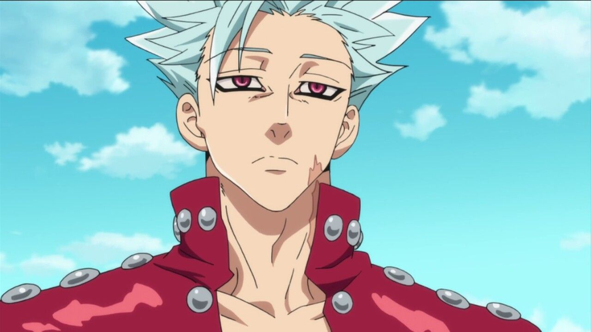

Meliodas
O líder dos Sete Pecados Capitais e o pecado da Ira do Dragão. Meliodas é um dos personagens mais poderosos da série e líder dos Sete Pecados Capitais. Ele possui uma personalidade brincalhona, mas tem um profundo senso de justiça e lealdade aos seus amigos.
História
Meliodas é um dos personagens principais de Nanatsu no Taizai. Como o líder dos Sete Pecados Capitais, ele carrega uma grande responsabilidade. Apesar de ser imortal devido à sua maldição, Meliodas luta com coragem e força, protegendo seus amigos e o Reino de Liones contra diversos inimigos.
Habilidades
- Full Counter: Meliodas possui a habilidade de refletir ataques mágicos ou físicos com sua espada, usando a mesma força ou poder do ataque que ele recebe.
- Imortalidade: Graças a uma maldição, Meliodas é imortal e pode se recuperar rapidamente de ferimentos.
- Força sobre-humana: Ele é extremamente forte e ágil, podendo enfrentar inimigos muito mais fortes que ele com grande habilidade.
Ban

O pecado da Ganância da Raposa, conhecido como o Imortal. Ban é um personagem complexo, com um passado sombrio, mas também um grande coração. Sua habilidade de regeneração e a busca pela fonte da juventude o tornam um dos personagens mais fascinantes da série.
História
Ban é um dos Sete Pecados Capitais e a personificação da Ganância. Ele busca a Fonte da Juventude, onde adquiriu sua imortalidade. Apesar de seu exterior durão, Ban possui um grande senso de lealdade e amizade, especialmente por Meliodas.
Habilidades
- Imortalidade: Ban é imortal devido à sua recuperação instantânea de ferimentos, mesmo os mais graves.
- Roubo de Vida: Ban é capaz de roubar a vida de outros seres vivos, o que lhe dá grande poder.
- Velocidade sobre-humana: Sua agilidade e reflexos são extremamente rápidos, tornando-o um oponente formidável em batalha.
Escanor
O pecado do Orgulho do Leão, Escanor é conhecido por ser o homem mais forte ao meio-dia, quando o sol atinge seu ponto máximo. Sua força aumenta proporcionalmente com a luz do sol, tornando-o uma das figuras mais imponentes da série.
História
Escanor é o mais poderoso dos Sete Pecados Capitais, com seu poder aumentando ao longo do dia até atingir seu auge ao meio-dia. Ele tem um grande orgulho de sua força, mas também esconde um lado mais sensível e nobre, especialmente em relação aos seus companheiros de equipe.
Habilidades
- Sol do Meio-dia: Escanor possui o poder de aumentar sua força de acordo com a intensidade da luz do sol, alcançando seu poder máximo ao meio-dia.
- Sol Cruel: A habilidade mais poderosa de Escanor, onde ele convoca uma esfera de sol intensamente quente e devastadora para atacar seus inimigos com uma força esmagadora.
- The One (pt: o Único) (天上天下唯我独尊: Entre o Céu e a Terra, Sou o Mais Honrado):Durante o meio-dia, quando seu poder está no auge por um minuto, ele se torna a manifestação do próprio poder e seu corpo supera as pessoas normais. Nesta forma, ele é considerado invencível.